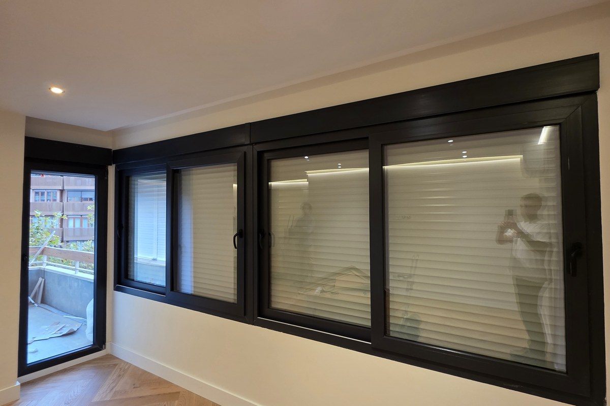
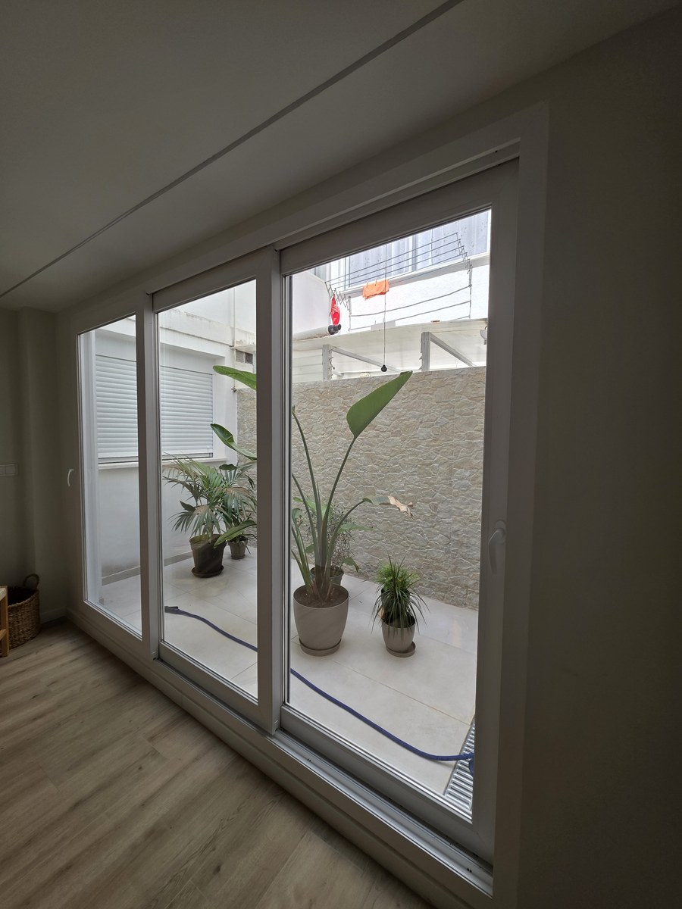
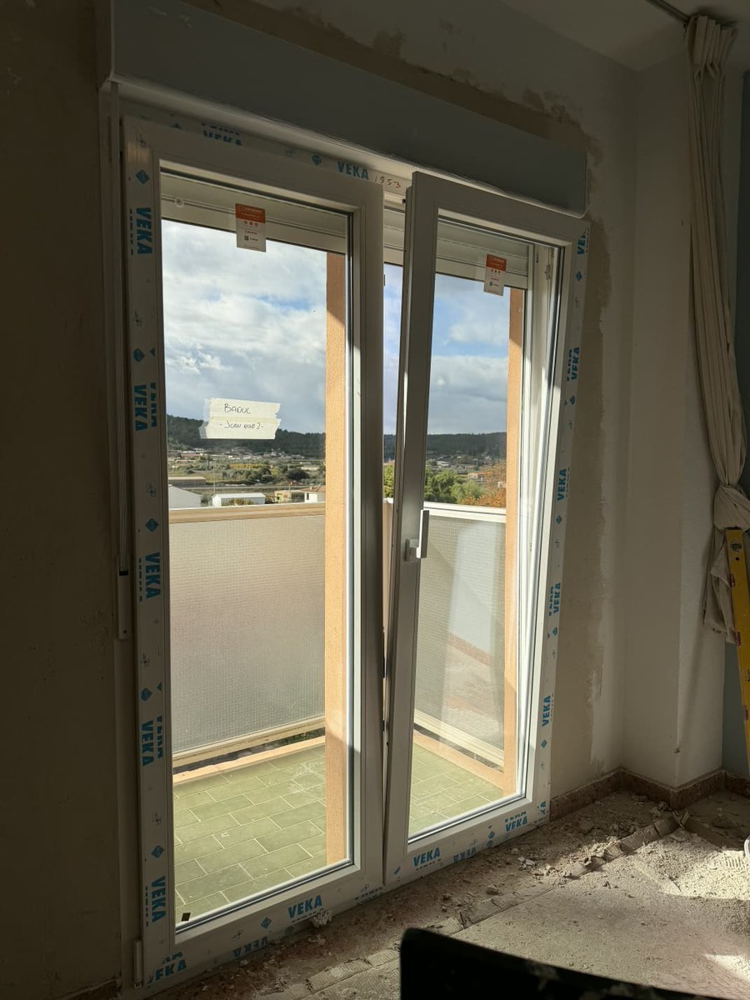
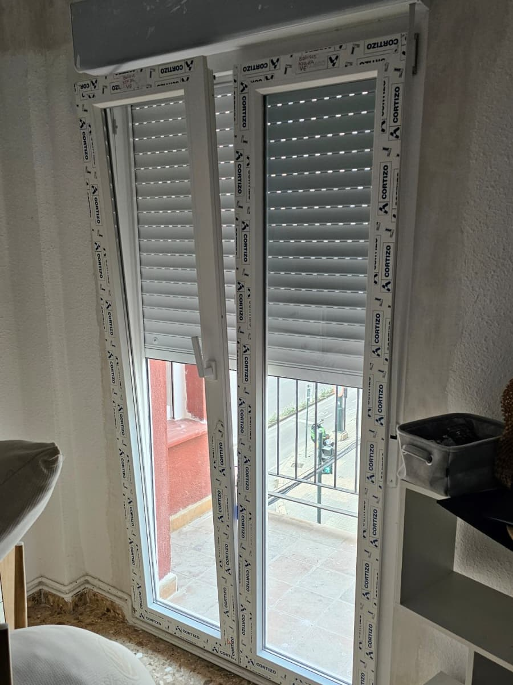
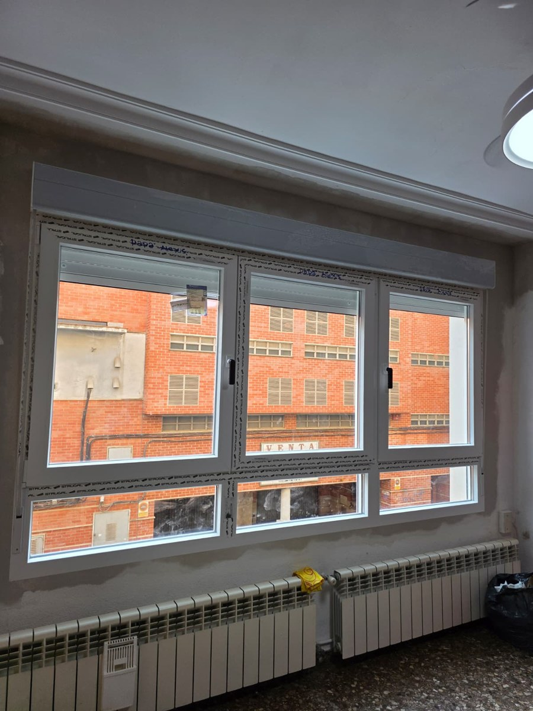

Ventanas en Ontinyent: Confort Térmico Todo el Año
En Ontinyent, el calor abrasador del verano y el frío de invierno disparan las facturas de luz. Ventanas Bañuls instala ventanas de PVC Cortizo y aluminio RPT con acristalamiento Climalit «4 Estaciones» (control solar + bajo emisivo). Bloquea la radiación estival, retén la calefacción en invierno y ahorra hasta un 45%. Medición a domicilio gratuita.
Damos servicio en todo el casco urbano de Ontinyent (Sant Josep, El Llombo, San Rafael) así como en urbanizaciones y chalets de la zona del Pou Clar y Santa Anna, con instalación limpia en 24-48 horas sin obras engorrosas.

La Clave en Ontinyent: Control Solar y Vidrios Inteligentes
Un cerramiento bien dimensionado transforma por completo tu vivienda:
Frena el Calor de más de 40 °C
El tratamiento bajo emisivo de control solar rechaza hasta el 70% de la radiación infrarroja del sol, evitando el efecto invernadero en salones y dormitorios orientados al sur y oeste.
Persianas de Aluminio Térmico
Sustituimos las viejas persianas de plástico deformadas por lamas de aluminio extruido rellenas de espuma de poliuretano y cajones monoblock herméticos que no dejan pasar el aire.
A 25 Minutos por la CV-40
Desplazamiento directo desde nuestro taller en Carrer Murillo 41 en Alcoy para tomar medidas con tecnología láser y preparar una propuesta detallada con precios directos de taller.
Calidad de Cierre y Fabricación en Taller
Nuestros herrajes y perfiles garantizan un ajuste hermético y una apertura suave que dura décadas.
Montaje Rápido y Limpio en Ontinyent
Protegemos tu mobiliario y suelos, retiramos las ventanas antiguas y dejamos las nuevas perfectamente ajustadas, selladas y rematadas en una sola jornada de intervención.




Preguntas Frecuentes sobre Ventanas en Ontinyent
¿Qué cristal es más aconsejable para el calor de Ontinyent?
Recomendamos vidrios dobles con tratamiento bajo emisivo y control solar «Guardian Sun» o «Climalit 4 Estaciones». Este vidrio filtra el rayo solar directo evitando que la casa se convierta en un horno en julio y agosto, pero mantiene el calor dentro durante el invierno.
¿Instaláis en chalets y casas de campo en las afueras de Ontinyent?
Sí, realizamos cerramientos completos, ventanales panorámicos y mosquiteras enrollables o plisadas tanto en pisos del casco urbano como en viviendas unifamiliares de las partidas rurales de Ontinyent.
¿Puedo pedir la deducción en el IRPF de la Generalitat?
Por supuesto. Al cambiar tus ventanas con Bañuls te proporcionamos los certificados oficiales exigidos por Hacienda para aplicar la deducción fiscal de hasta el 40% en tu IRPF.
Solicita tu Presupuesto sin Compromiso en Ontinyent
Contacta con nosotros y concertamos una visita para medir tus ventanas sin ningún compromiso: